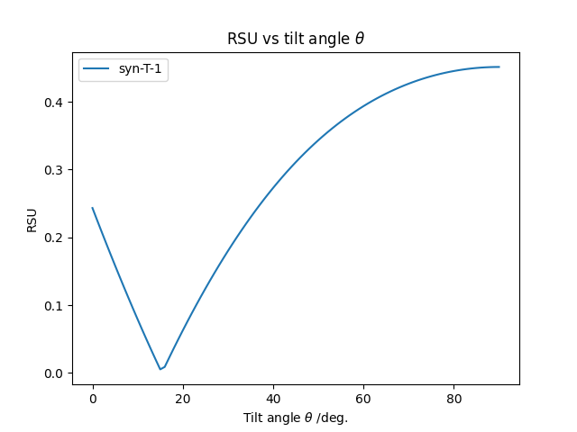
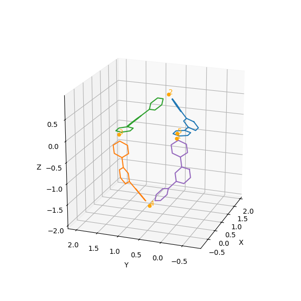

Examples#
Here are some examples of how to use the package.
If you don’t know how to execute the code, please refer to the general instruction.
1. Calculate RSU#
To calculate the RSU, you can use the following code:
import rsuanalyzer as ra
ans = ra.calc_rsu("RLFFRLFFRLFF", 34)
print(ans)
The result is below.
0.2200836694739778
In this example, the RSU of the trimeric ring “RLFFRLFFRLFF” with theta of 34 degrees is calculated. Delta is set to 87 degrees by default, but you can change it by specifying the delta argument, e.g., ra.calc_rsu("RLFFRLFFRLFF", 34, 90).
2. Make a Ranking#
You can create a ranking of trimeric rings using the following code:
import rsuanalyzer as ra
# Enumerate all trimeric ring IDs
trimeric_rings = ra.enum_ring_ids(3)
# Create ranking. (theta=40, delta=87, num_top=5)
df = ra.create_small_rsu_ranking(trimeric_rings, 40, 87, 5)
# Save the ranking to a csv file
df.to_csv("top5_trimeric_theta40.csv")
The result is shown below.
Rank |
Ring ID |
RSU |
|---|---|---|
1 |
RLFFRLFBLRBF |
0.2528234826446794 |
2 |
RLFFRLFFRLFF |
0.2730399143564739 |
3 |
RLFFRLFFLRFF |
0.3029129929379826 |
4 |
RRFFRLFFLRFB |
0.3305137161743901 |
5 |
RRFFLRFFLRFB |
0.3634236070206907 |
See also
See the documentation of the functions for more information.
3. Make a Plot#
You can create a plot of RSU vs. theta using the following code:
import rsuanalyzer as ra
# Create a pandas.DataFrame of RSU vs. theta
df1 = ra.create_rsu_vs_theta_df("RLFFRLFFRLFF")
# Plot RSU vs. theta
ra.plot_rsu_vs_theta(df1, labels=["syn-T-1"])
The result is shown below.
See also
See the documentation of the functions for more information.
4. Visualize Chains#
You can visualize chains using the following code:
import rsuanalyzer as ra
# Create a chain
ra.visualize_chain("RRFFLLBBRRFFLLBB", 34, 87)
The result is shown below.
